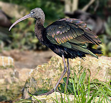
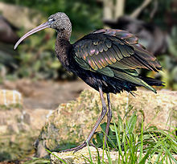

| Glossy Ibis | |
|---|---|
|  | |
| Breeding plumage | |
| Conservation status | |
| Binomial name | |
| Plegadis falcinellus Linnaeus, 1766 |
| Glossy Ibis | |
|---|---|
|  | |
| Breeding plumage | |
| Conservation status | |
| Binomial name | |
| Plegadis falcinellus Linnaeus, 1766 |
The Glossy Ibis (Plegadis falcinellus) is a wading bird in the ibis family Threskiornithidae.
This is the most widespread ibis species, breeding in scattered sites in warm regions of Europe, Asia, Africa, Australia, and the Atlantic and Caribbean region of the Americas. It is thought to have originated in the Old World and spread naturally from Africa to northern South America in the 19th century. This species is migratory; most European birds winter in Africa, and in North America birds from north of the Carolinas winter farther south. Birds from other populations may disperse widely outside the breeding season. While generally declining in Europe it has recently established a breeding colony in Southern Spain.
The Glossy Ibis nests colonially in trees, often with herons. It is also gregarious when feeding in marshy wetlands; it preys on fish, frogs and other water creatures, as well as occasionally on insects.
This species is 55–65 centimetres (22–26 in) long with an 88–105 centimetres (35–41 in) wingspan. Breeding adults have reddish-brown bodies and shiny bottle-green wings. Non-breeders and juveniles have duller bodies. This species has a brownish bill, dark facial skin bordered above and below in blue-gray (non-breeding) to cobalt blue (breeding), and red-brown legs. Unlike herons, ibises fly with necks outstretched, their flight being graceful and often in V-formation.
Sounds made by this rather quiet ibis include a variety of croaks and grunts, including a hoarse grrrr made when breeding.
The Glossy Ibis is one of the species to which the Agreement on the Conservation of African-Eurasian Migratory Waterbirds (AEWA) applies.

_background_blurred.jpg){kind=link}
_at_Bharatpur_I_IMG_5384.jpg){kind=link}